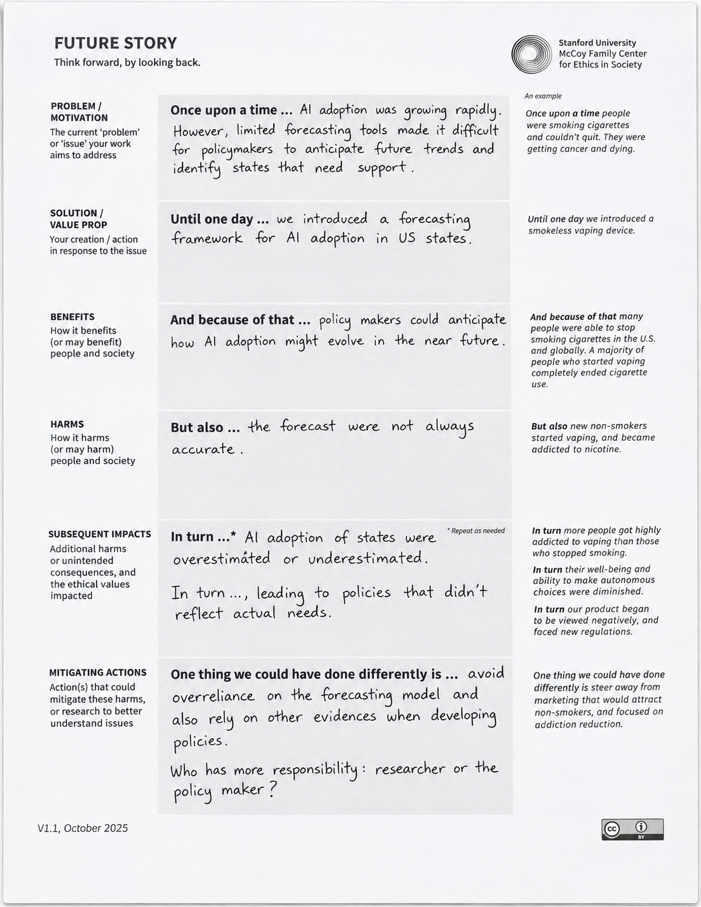
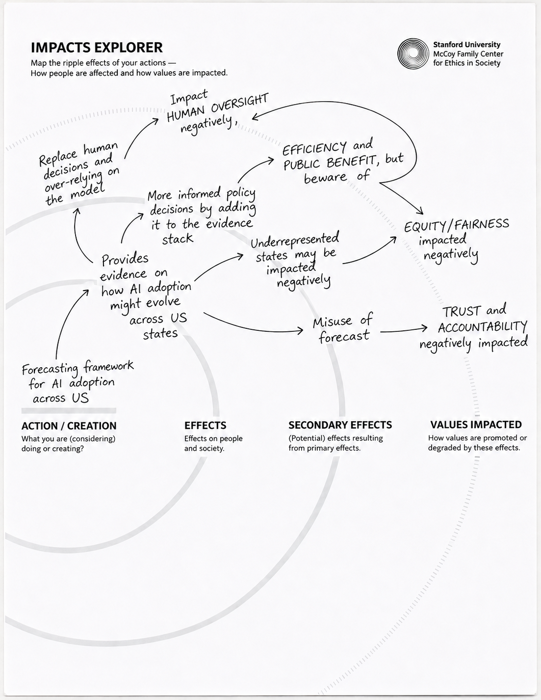
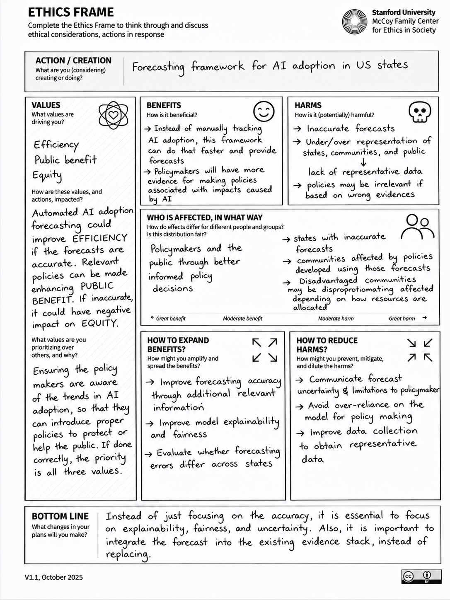
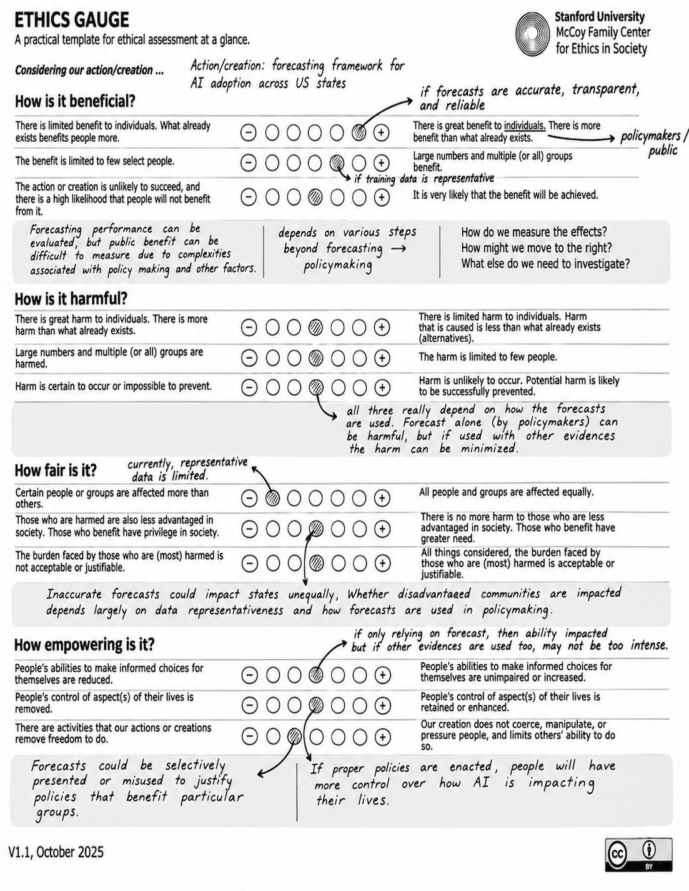
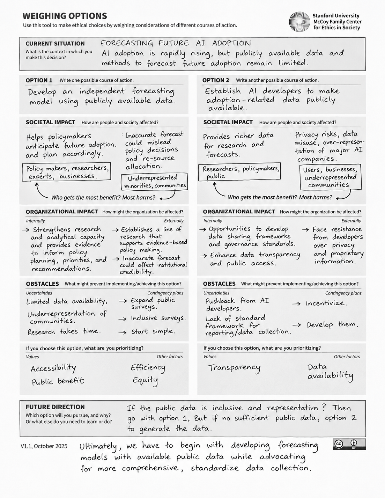
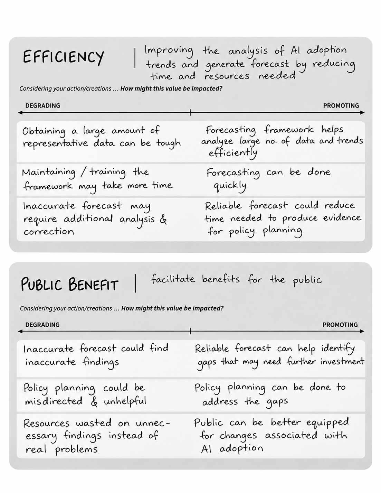
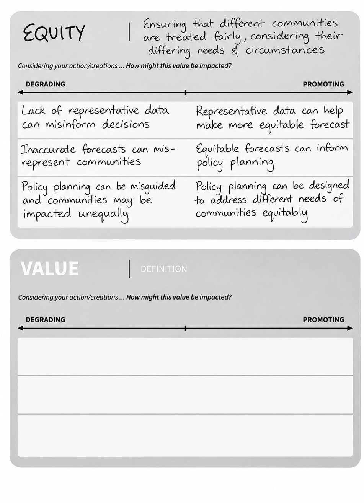

I recently participated in Ethics, Technology, and Public Policy for Practitioners (ETPP), a course offered by Stanford University. For the final deliverable, I decided to apply Stanford's Ethics Toolkit to one of my recent research projects, Forecasting AI Adoption Across U.S. States. My goal was to revisit this research beyond its technical contributions and explore its potential applications and broader ethical implications. Applying the toolkit encouraged me to think more critically about how AI adoption forecasts might inform policymaking, who could benefit from their use, and what unintended consequences might arise. In this post, I walk through that process, beginning with an introduction to the research problem, followed by how I applied the toolkit, the insights and reflections that emerged, and the future directions and next steps I identified.
Introduction
As artificial intelligence (AI) adoption expands across sectors, understanding where and how adoption occurs has become an important research and policy question. However, forecasting AI adoption remains relatively underexplored, partly due to the limited availability of timely and geographically detailed adoption data. In my recent paper, Forecasting AI Adoption Across U.S. States, I developed a forecasting framework to predict AI adoption across U.S. states using publicly available data from the U.S. Census Bureau's Business Trends and Outlook Survey (BTOS). Throughout this research, my primary focus was on the technical aspects of developing and evaluating the forecasting framework. However, I wanted to revisit this work from an ethical perspective to better understand its broader implications, particularly how such a model could be used to inform policymaking and the potential ethical considerations associated with its applications. To explore these questions, I applied different components of the Ethics Toolkit to my research. This exercise allowed me to move beyond the technical performance of the model and critically reflect on its potential benefits, limitations, and broader societal implications.
Applying the Ethics Toolkit
The Ethics Toolkit consists of six tools, all of which I used to further analyze my research from an ethical perspective. The process began with Future Story, followed by Impact Explorer, Ethics Frame, Value Cards, Ethics Gauge, and finally, Weighing Options. The application of these six tools is documented through the completed toolkit materials, which will be included on this blog page as a carousel below. One challenge in applying these tools was assessing potential societal impacts before the forecasting framework had been used in actual policymaking. As a result, some of the ethical considerations were explored through hypothetical scenarios rather than observed outcomes.
Inside the toolkit.
Browse the seven completed worksheets across six exercises. Select an image to view it at full size.







Insights and Reflections
I followed the sequence of the Ethics Toolkit to explore how my perspective evolved throughout the process. Starting with Future Story, the exercise provided an overview of the research problem and the motivation behind it. While these aspects were already familiar, my perspective began to broaden when considering the potential harms of the proposed solution. The technical limitations of the forecasting model were already understood, but the exercise encouraged me to think beyond these challenges. Even if the technical limitations could be overcome and the model successfully implemented, how might its forecasts and limitations influence policymaking? What unintended consequences could arise from its use? These questions opened up new areas for investigation, shifting the focus beyond technical performance to the broader implications of applying the research in policymaking.
Building on these reflections, the Impact Explorer encouraged a deeper examination of the potential consequences and the ethical values affected by the use of forecasting evidence. The forecasts could support more informed policy decisions, helping states better prepare for changes associated with AI adoption. However, they could also lead to unintended consequences. For example, overreliance on the model could reduce human involvement in decision-making, a lack of representative data could lead to inaccurate or unreliable forecasts, and the forecasts themselves could be misused. Exploring these possibilities highlighted how the same research could promote values such as efficiency and public benefit while potentially undermining human oversight, equity, and trust.
The natural next step was the Ethics Frame, which provided an opportunity to examine more closely the values underlying the research. While efficiency had been a primary motivation from the beginning, public benefit and equity emerged as important considerations through the toolkit. Identifying potential benefits and harms, examining who might be affected, and exploring ways to expand benefits and reduce harms further broadened the perspective beyond the technical aspects of the research. While policymakers and the public could benefit from more informed decisions, inaccurate forecasts for certain states could contribute to policies that do not reflect local needs, potentially harming affected communities, particularly those already disadvantaged. Looking more closely at who might experience these consequences brought a different perspective to the research, highlighting the responsibility that comes with developing a forecasting framework whose outputs could influence decisions affecting large populations.
Building on these values, the Value Cards exercise provided an opportunity to define the three key values, efficiency, public benefit, and equity, more concretely from the perspective of the research. It also encouraged a closer examination of how different aspects of the forecasting framework and its potential applications could either promote or undermine these values. These values could also guide future research decisions, such as evaluating whether forecasting errors differ across states, improving model explainability, and ensuring that forecasts are interpreted alongside other relevant evidence rather than used in isolation.
The Ethics Gauge was a useful next step, providing a structured way to assess the research and its potential implementation. It brought together the considerations explored in earlier exercises and offered an overview of the ethical analysis conducted so far. The gauge could also serve as an ongoing assessment tool, allowing ethical considerations to be revisited as the research progresses. Another valuable aspect was its ability to bring the reflection back into focus. By concentrating on four dimensions, benefits, harms, fairness, and empowerment, it provided a more grounded and manageable way to evaluate ethical implications without getting lost in an overwhelming range of considerations.
Finally, Weighing Options provided a useful way to consider alternative courses of action for addressing the research problem. While the original approach focused on developing an independent forecasting framework using publicly available data, another possibility was to establish reporting requirements for AI developers to provide greater insights into adoption patterns through the use of their AI tools. Examining organizational impacts alongside societal impacts provided a broader understanding of the feasibility of each approach. Both options presented benefits and challenges, but they also emphasized different values and priorities. However, these approaches are not necessarily mutually exclusive. Improved data availability through developer reporting could complement independent forecasting efforts by providing additional evidence for research. This exercise highlighted how the choice of action depends not only on feasibility and potential outcomes but also on which values are prioritized in pursuing the research goal.
Future Directions and Next Steps
Building on the insights gained from the Ethics Toolkit, several interesting directions have emerged to continue this research. One important next step would be to examine how AI adoption forecasts align with other available evidence and contextual information. This could involve studying how the forecasts relate to each state's economic conditions, demographic and occupational characteristics, educational attainment, and policy priorities to understand whether the predictions can provide additional value for policymaking. From a technical perspective, one approach would be to incorporate this contextual information directly into the forecasting framework and evaluate whether it improves predictive performance. However, increasing model complexity could introduce challenges related to explainability. Another possibility would be to explore LLM-assisted approaches to interpret the forecasts alongside other available evidence and identify relevant relationships and patterns. This would require appropriate guardrails, validation, and grounding in evidence to ensure that the generated explanations are reliable. These directions could help extend the research beyond generating forecasts toward developing a more comprehensive and interpretable forecasting framework that supports evidence-informed policymaking. I also plan to continue applying the Ethics Toolkit as my research progresses and intend to include a discussion of ethical considerations and potential societal impacts alongside the technical findings.
Closing Reflection
Applying the Ethics Toolkit provided an opportunity to revisit familiar research questions from a different perspective. What began as an effort to evaluate the technical performance of an AI adoption forecasting model evolved into a broader examination of how its outputs might be interpreted, applied, and potentially misused. Perhaps the most valuable takeaway was recognizing that addressing technical limitations alone is not sufficient to ensure that research contributes positively to policymaking. Understanding who might be affected, which values are being prioritized, and how evidence could influence decisions is equally important. The exercise also demonstrated that ethical reflection does not have to be separate from technical research. Instead, it can inform how research questions are formulated, how methods are evaluated, and how findings are communicated and applied.